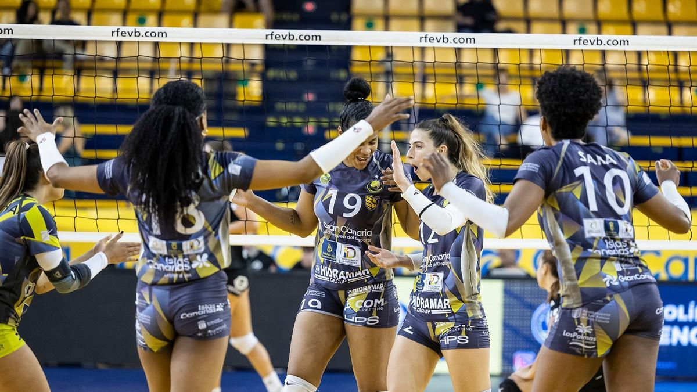

Ultimas novedades
-Noticias mas importantes del deporte mundial-
Austria elimina a España en la Copa de Naciones de Madrid

El equipo español ha caído eliminado en la Copa de Naciones de voley playa que se está disputando en el Parque Deportivo Puerta de Hierro, al perder en semifinales ante Austria, con lo que se queda fuera de la fase final. El conjunto centroeuropeo se enfrentará a Lituania en la final. El ganador logrará el pase a la ronda definitiva, que otorga una plaza para los Juegos Olímpicos de París 2024.
El Hidramar Gran Canaria se proclama campeón de la Liga Iberdrola

Al cuarto día y con emoción hasta el final, el Hidramar se impuso al Tenerife Libby’s en el set de oro (12-15) del cuarto partido de la eliminatoria.